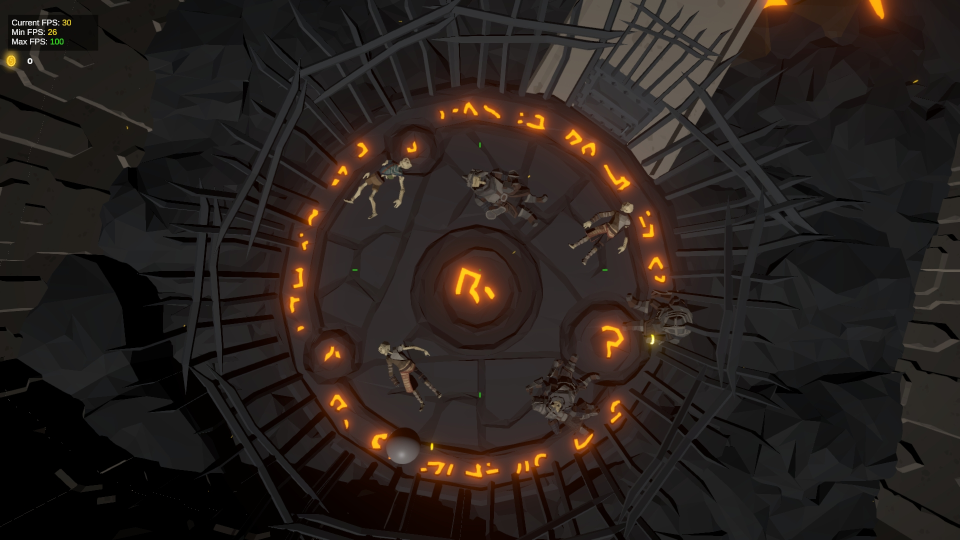

Dungeon Escape

Dungeon Escape is a narration-based adventure game developed for a 48-hour game jam using Unity. I synchronized the narration with the player's actions.
Code Snippets
Narrator Manager
public class NarratorManager : MonoBehaviour
{
public static NarratorManager Instance { get; private set; }
[SerializeField] private AudioSource audioSource;
[Header("First Level")]
[SerializeField] private GameObject deadDwarf;
[SerializeField] private GameObject dwarfBracelet;
[SerializeField] private GameObject lockedDoor;
[Header("Second Level")]
public bool HasDiedOnTheSecondLevel = false;
[SerializeField] private PlayerMovement playerMovement;
[Header("Third Level")]
[SerializeField] private float thirdLevelSecondsUntilTimeStop;
[SerializeField] private Rigidbody rb;
[SerializeField] private GameObject correctLever;
[SerializeField] private GameObject thirdLevelTeleporter;
[Header("Fourth Level")]
[SerializeField] private GameObject lavaToDisable;
[SerializeField] private GameObject grapplingHookUI;
[SerializeField] private GameObject theEndText;
private Coroutine currentRoutine = null;
[SerializeField] private SerializedDictionary<AudioType, AudioClip> clipsDic;
private void Awake()
{
if (Instance != null && Instance != this)
Destroy(this);
else
Instance = this;
}
private void Start()
{
Teleporter.OnTeleported += NarrateLevels;
deadDwarf.GetComponent<DeadBody>().OnBraceletPickedUp += StartNarratingFirstLevelPartTwo;
lockedDoor.GetComponent<CageDoor>().OnDoorOpened += StartNarratingFirstLevelPartThree;
currentRoutine = StartCoroutine(NarrateFirstLevelNoBracelet());
playerMovement.canWallRun = false;
}
private IEnumerator NarrateFirstLevelNoBracelet()
{
audioSource.clip = clipsDic[AudioType.Intro];
audioSource.Play();
yield return new WaitWhile(() => audioSource.isPlaying);
deadDwarf.layer = LayerMask.NameToLayer("Interactable");
}
private void NarrateLevels(object sender, TeleportEventArgs e)
{
switch (e.NewLevel)
{
case 1: StartCoroutine(NarrateSecondLevel()); break;
case 2: StartCoroutine(NarrateThirdLevel()); break;
case 3: lavaToDisable.SetActive(false); break;
}
}
private IEnumerator NarrateSecondLevel()
{
audioSource.clip = clipsDic[AudioType.Parkour2];
audioSource.Play();
SubtitleManager.OnSubtitle?.Invoke();
yield return new WaitWhile(() => audioSource.isPlaying);
while (true)
{
if (HasDiedOnTheSecondLevel)
{
yield return NarrateSecondLevelFirstDeath();
yield break;
}
yield return null;
}
}
}
public enum AudioType
{
Intro, Intro2, Parkour, Parkour2, Parkour2Second, Parkour2Third,
Parkour3AfterLevelFinish, Puzzle, PuzzleSecond,
EndCoinsCollectedFirstTime, EndCoinsCollectedNotFirstTime, EndCoinsNotCollectedAtAll,
MomAreYouStillPlaying, MomGoToSleep, OkayMom
}